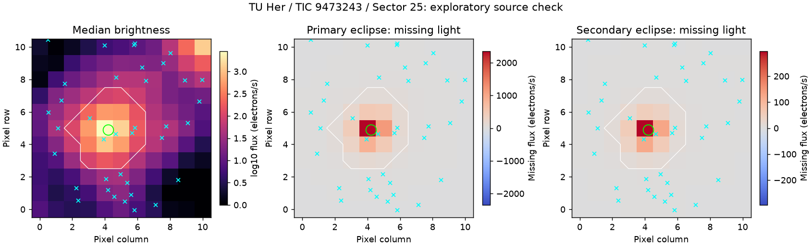
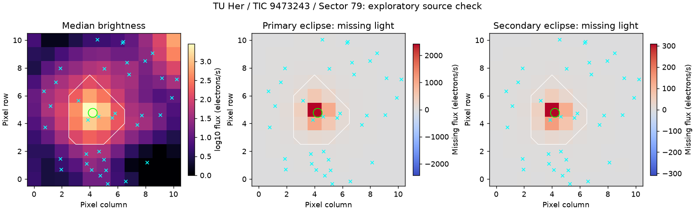

TIC 9473243 与 VSX 中 TU Her 相距约 0.08 角秒，TIC 对应 Gaia 编号 1333162246725509888。这里核对的是已知对象的信号来源。

绿圈是目标位置，蓝叉是其他目录光点，白线是原测光区域。左图表示平常收到的光；中、右图的红色表示遮挡期间减少的光。两种食分别统计，不用正常图的最亮位置代替变光来源。
| 变化 | 可用事件数 | 变化中心距目标（像素） | 原测光区域的典型下降比例 |
|---|---|---|---|
| 深食 | 7 | 0.051 | 82.6% |
| 浅食 | 8 | 0.074 | 9.6% |
中心是在最强变化附近 3×3 像素中估计，未做精细的光斑拟合。下降比例先对每次事件窗口内的光取平均，再取各事件下降比例的中位数，不是精确最大变幅。

绿圈是目标位置，蓝叉是其他目录光点，白线是原测光区域。左图表示平常收到的光；中、右图的红色表示遮挡期间减少的光。两种食分别统计，不用正常图的最亮位置代替变光来源。
| 变化 | 可用事件数 | 变化中心距目标（像素） | 原测光区域的典型下降比例 |
|---|---|---|---|
| 深食 | 6 | 0.096 | 85.5% |
| 浅食 | 7 | 0.063 | 10.2% |
中心是在最强变化附近 3×3 像素中估计，未做精细的光斑拟合。下降比例先对每次事件窗口内的光取平均，再取各事件下降比例的中位数，不是精确最大变幅。
两个时段的深食、浅食都支持变化来自目标附近。
这项检查只支持或质疑 TESS 分辨率下的来源位置。还不能排除未分辨的近邻，也没有给出正式定位误差。目录坐标未按自行传播到每个观测时刻；三种测光区域都能看到深食和浅食。它们共享像素和观测噪声，不是三套独立证据。完整结果保留各区域的事件下降比例，可用于进一步复核。